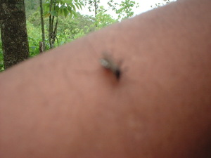

higtek 
/higtɔk/
Var.1: igtek
n.
“mosquito”
n.
Culicidae_spp.
mosquito
Ka higtek iyan ka mananap ne egpekeiling te pilè piru eglayang-layang wey egpangahat ne iyan egpuunan te dalu ne lusung. Meitem wey due degma mabatek ne klasi kayi wey egngiyeng-ngiyeng ke egkahi, wey diyè eg-ugpè te kenè egkaaldawan wey malindit ne inged.
Masalig ne higtek kayi te kanami ke marusilem, sikan naa, pupules kew ke eglipereng kew.
There are many mosquitos here if night, therefore, pull your blanket over your head when you sleep.
Masakit na egpangahat ka higtek diyè te kanami su derakel amana.
The mosquitos in our place have painful bites because they’re big.
Kukumbut ki ka eglipereng su eyew kenè ki egkakahat te higtek.
We'll hang the net so that we won't be bitten by the mosquito(s).
Eng. mosquito
Tag. lamók
Ceb. lamok
Ilo.: lámok
Binukid: tagenek
Tagbawa: tagenek
Tasaday: tagenek
Ilianen: tehenek
Dibabawon: tagnek
Sarangani: tigenek
Kinamigin: tagnuk
Cagayano: tagnek 'mosquito like insect'
Proto: tag(e)nek
OCM: Fauna (136)
DDP: Insect (1.6.1.7)
Online dict status: -
Usage level: B
v.
for someone (eggigtekan/eg-igtekan, innigtekan/in-igtekan/miggigtekan/mig-igtekan/piggigtekan/pig-igtekan, gigteki/igteki, eg><an-) to be bitten by insects
Wrd.Gloss: bitten
Eggigtekan e ka batè.
The child to be bitten by mosquito.
Eng. bitten
Online dict status: -
Usage level: M
Updated by: RJH,AAA,TME,QDL,RAA,QDL
Last updated: 18/Nov/2009
"higtek" in healthbook "Migderalu si Junjun te malariya"
"higtek" in healthbook "Migderalu si Junjun te malariya"
"higtek" in healthbook "Migderalu si Junjun te malariya"
This page last updated: 19/May/2012
Copyright © 2009-2010, Matigsalug Language Christian Association, Inc